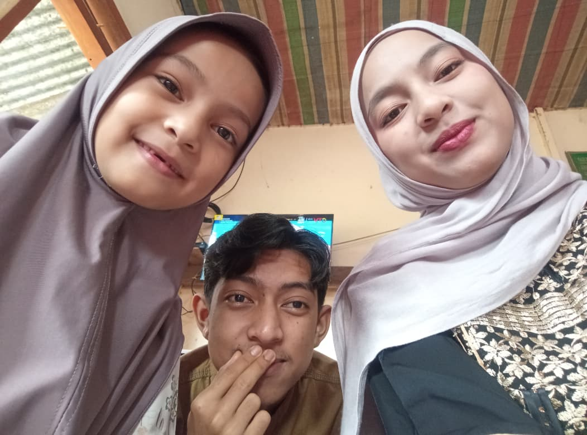
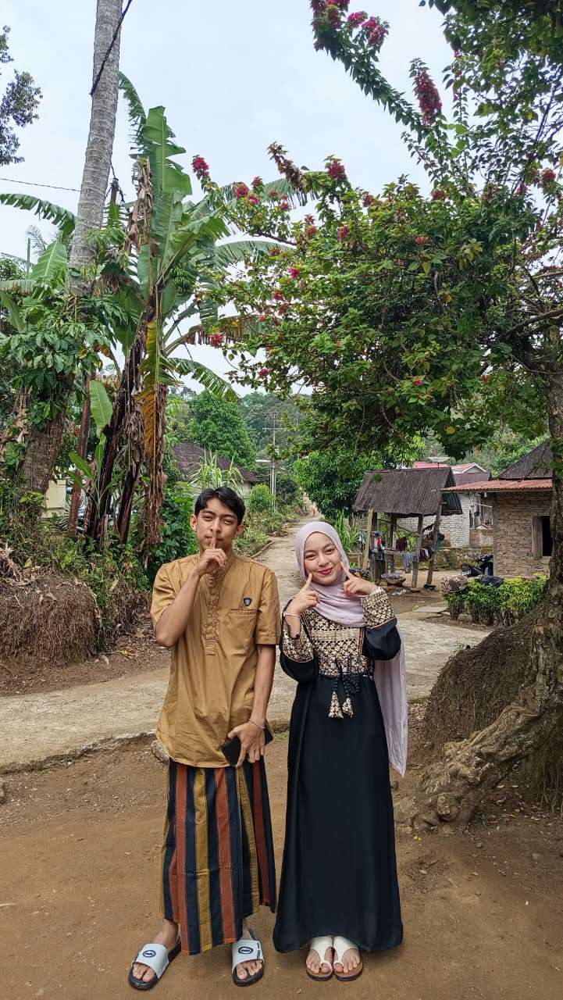
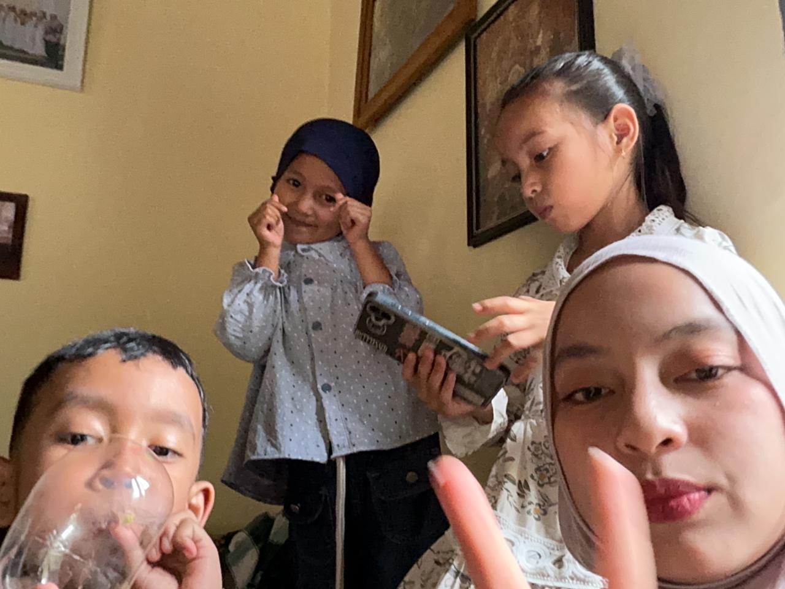
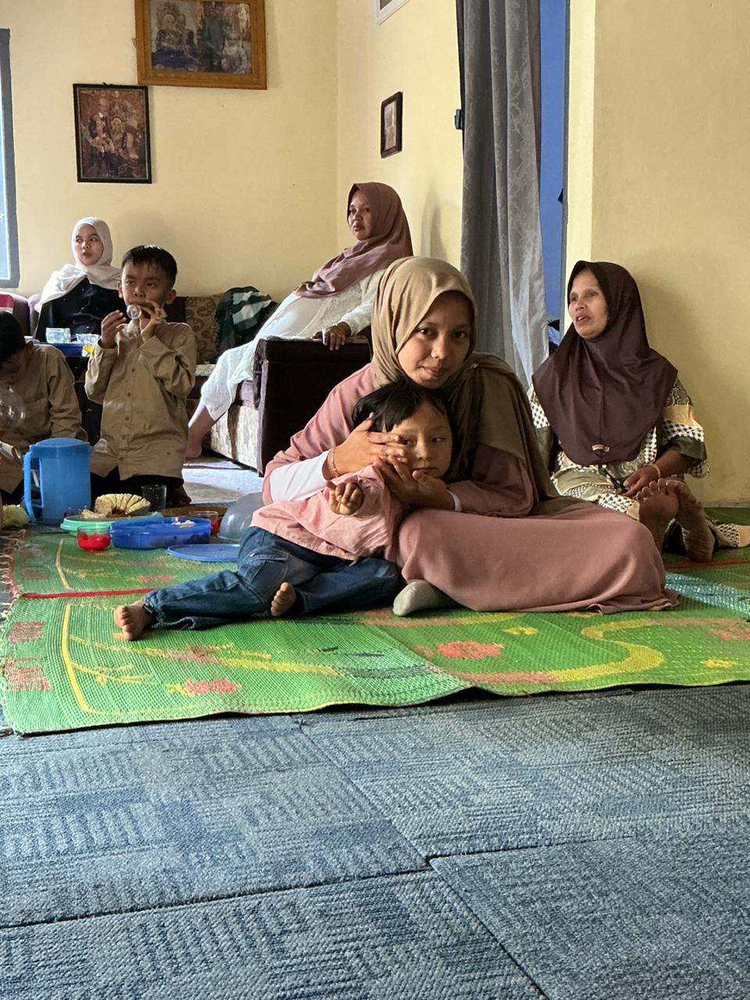
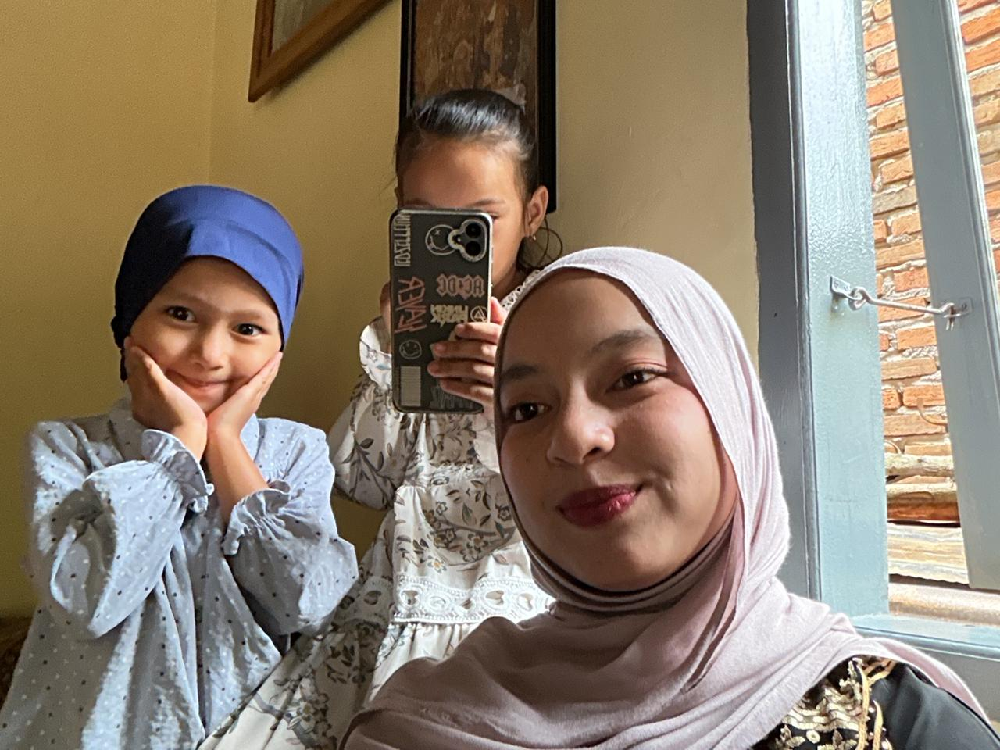
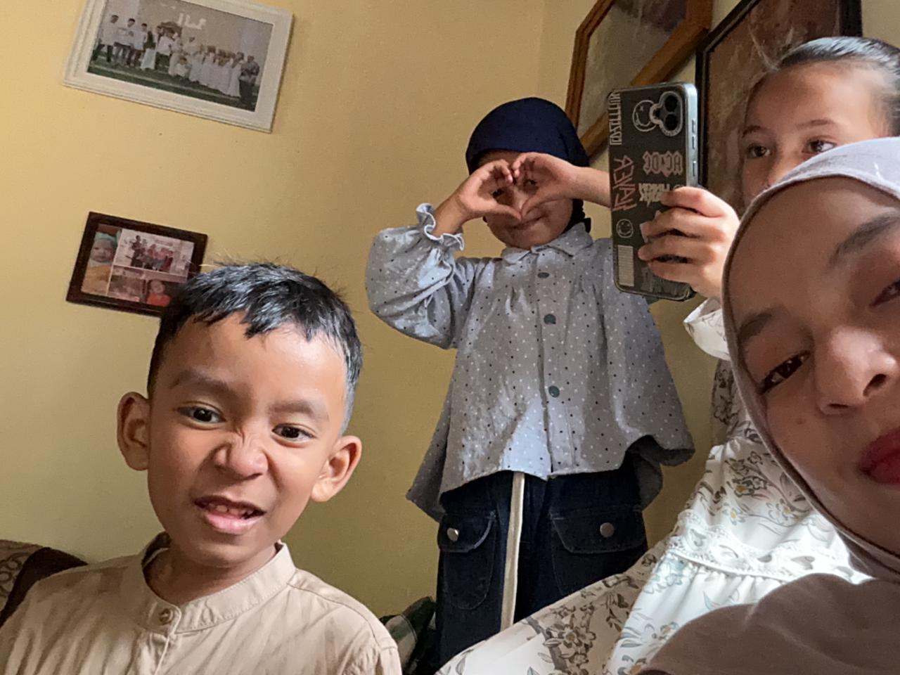
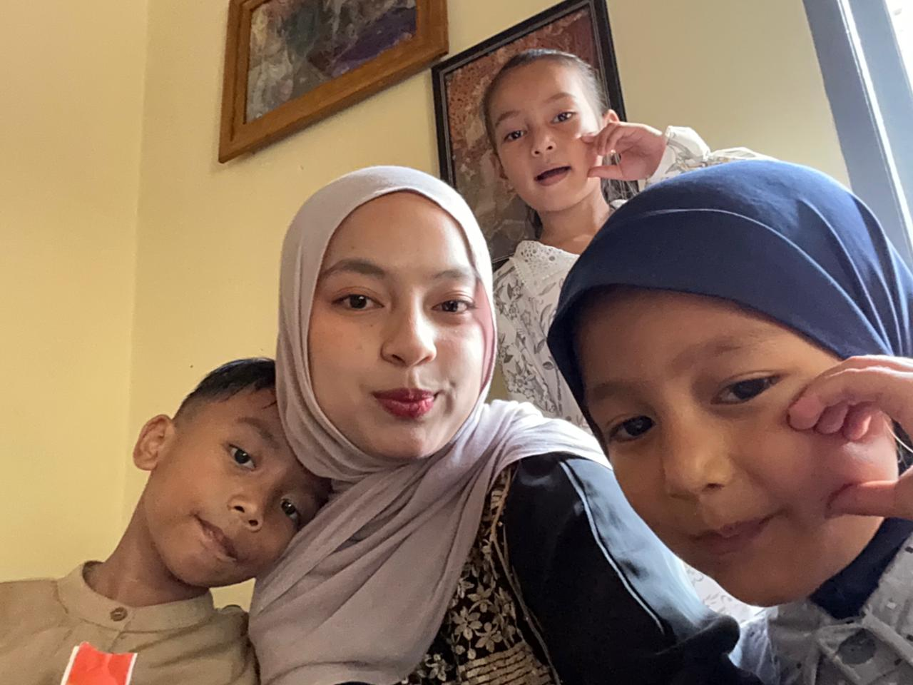
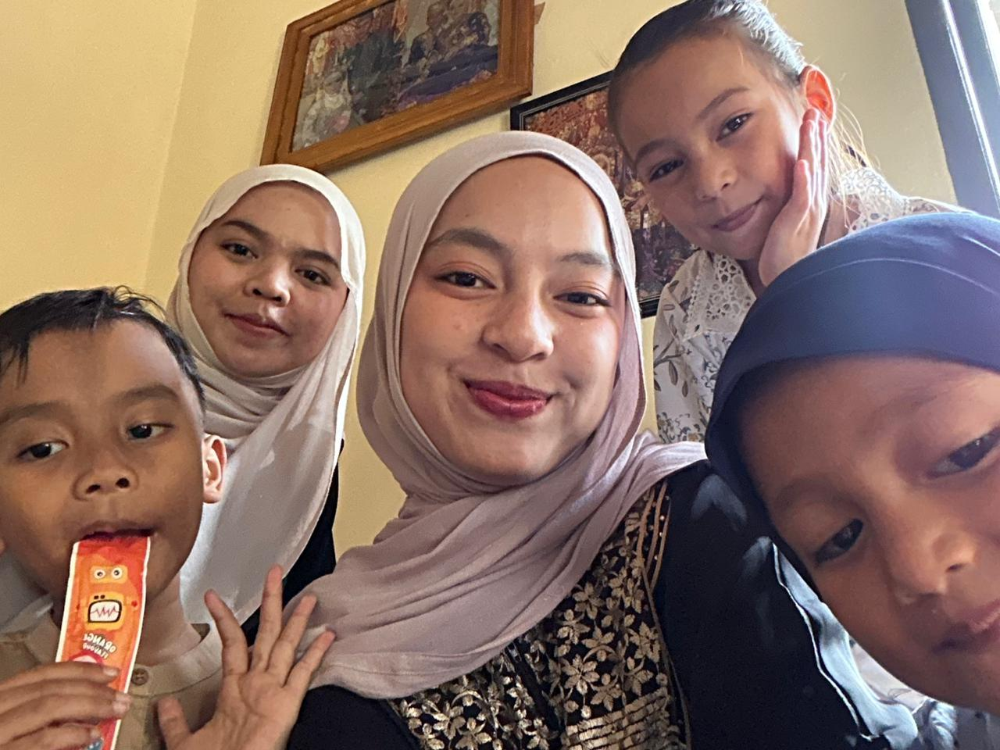
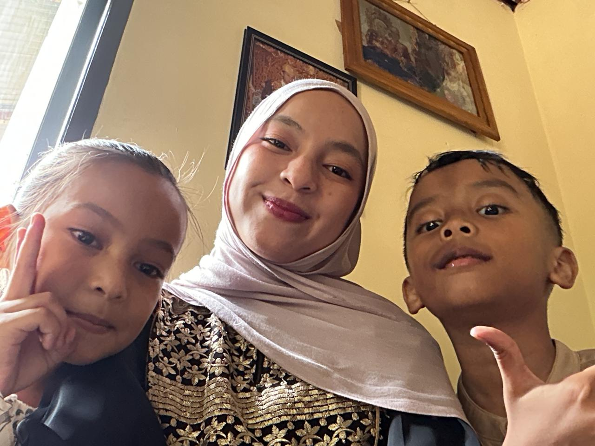

🌙 Selamat Hari Raya Idul Fitri ✨
💚 Minal aidin wal faizin, mohon maaf lahir dan batin
📖 Cerita Lebaran Saya

🕌 Persiapan & Sholat Id
Hari Raya Idul Fitri tahun ini saya rayakan pada hari Sabtu, 21 Maret 2026, mengikuti ketetapan pemerintah. Sejak pagi hari, suasana sudah terasa sangat berbeda dibandingkan hari-hari biasa. Udara pagi terasa lebih sejuk dan hati terasa lebih tenang karena akan menyambut hari kemenangan setelah menjalani ibadah puasa selama satu bulan penuh.
Saya bangun pada pukul 05.30 untuk melaksanakan sholat Subuh. Setelah itu, saya mulai mempersiapkan diri dengan menyiapkan pakaian terbaik yang akan saya gunakan untuk pergi ke masjid. Saya memastikan semuanya rapi dan bersih agar dapat tampil dengan baik di hari yang istimewa ini.
Sekitar pukul 08.30, saya dan keluarga berangkat menuju masjid. Di sepanjang perjalanan, terlihat banyak orang yang juga mengenakan pakaian terbaik mereka dan berjalan menuju masjid dengan penuh kebahagiaan. Sholat Id dimulai pada pukul 09.00 dan berlangsung dengan khusyuk, kemudian dilanjutkan dengan khutbah yang berisi nasihat dan pengingat tentang pentingnya menjaga silaturahmi dan saling memaafkan. Kegiatan di masjid selesai sekitar pukul 10.00.

🤝 Silaturahmi & Keluarga
Setelah selesai melaksanakan sholat Id, saya dan keluarga saling bermaaf-maafan. Momen ini menjadi sangat mengharukan karena kami saling meminta maaf atas kesalahan yang mungkin pernah dilakukan. Suasana penuh kehangatan dan kebersamaan sangat terasa di antara kami.
Setelah itu, kami melanjutkan kegiatan dengan bersilaturahmi ke rumah atuk, yaitu orang tua dari ibu saya. Di sana kami disambut dengan penuh kebahagiaan dan kehangatan. Tidak lama kemudian, kami juga melanjutkan silaturahmi ke rumah nenek, yaitu orang tua dari ayah saya.
Di rumah nenek, saya mendapatkan banyak THR dari keluarga, yang tentunya membuat saya sangat senang. Selain itu, kami juga berbincang-bincang mengenai perkuliahan yang sedang saya jalani serta rencana saya setelah menyelesaikan pendidikan. Saya merasa sangat bersyukur karena mendapatkan dukungan penuh dari keluarga terhadap pendidikan yang saya tempuh saat ini.
Setelah dari rumah nenek, kami juga bersilaturahmi ke rumah ibuk. Di sana, saya kembali mendapatkan THR dan menikmati berbagai kue khas Lebaran bersama keluarga. Suasana penuh canda dan tawa membuat momen tersebut menjadi sangat berkesan dan tidak terlupakan.

🎉 Kegiatan Sore & Penutup
Menjelang waktu Zuhur, saya dan keluarga memutuskan untuk pulang ke rumah untuk beristirahat setelah melakukan berbagai kegiatan sejak pagi hari. Setelah beristirahat sejenak, saya kembali beraktivitas pada sore harinya.
Pada pukul 15.00, para pemuda di kampung saya mengadakan berbagai acara untuk memeriahkan Hari Raya Idul Fitri. Suasana kampung menjadi sangat ramai dan penuh semangat karena banyak lomba yang diadakan, mulai dari lomba permainan tradisional hingga lomba yang melibatkan kerja sama tim.
Saya pun ikut berpartisipasi dalam salah satu lomba, yaitu lomba tarik tambang. Lomba tersebut berlangsung dengan sangat seru dan penuh kebersamaan. Semua peserta tampak antusias dan saling menyemangati satu sama lain. Alhamdulillah, tim saya berhasil memenangkan lomba tersebut dan kami mendapatkan hadiah sebesar Rp10.000 per orang.
Meskipun hadiahnya tidak terlalu besar, tetapi pengalaman, kebersamaan, dan keseruan yang saya rasakan jauh lebih berharga. Sekitar pukul 17.00, saya kembali pulang ke rumah untuk beristirahat setelah menjalani hari yang penuh kegiatan.
Hari Lebaran kali ini menjadi momen yang sangat berkesan bagi saya, karena selain dapat berkumpul bersama keluarga, saya juga mendapatkan banyak kebahagiaan, dukungan, serta pengalaman yang tidak terlupakan. Saya berharap momen seperti ini dapat terus terulang di tahun-tahun berikutnya.
📸 Galeri Lebaran
✨ Kenangan indah bersama keluarga







